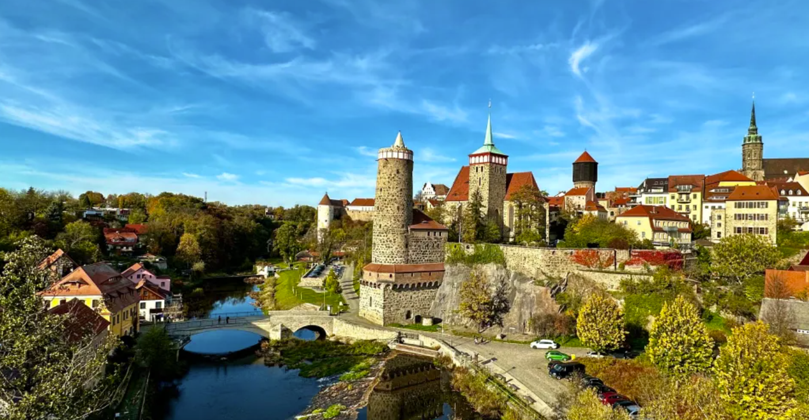
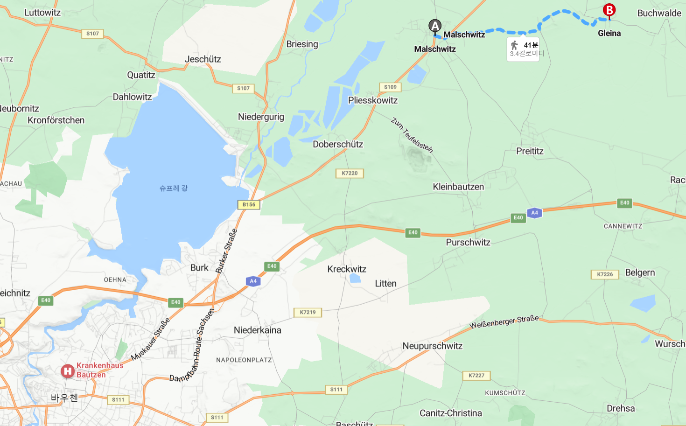
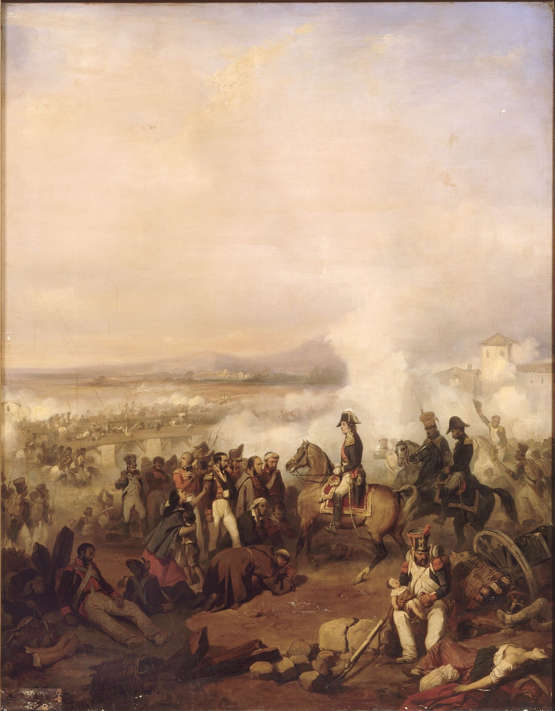
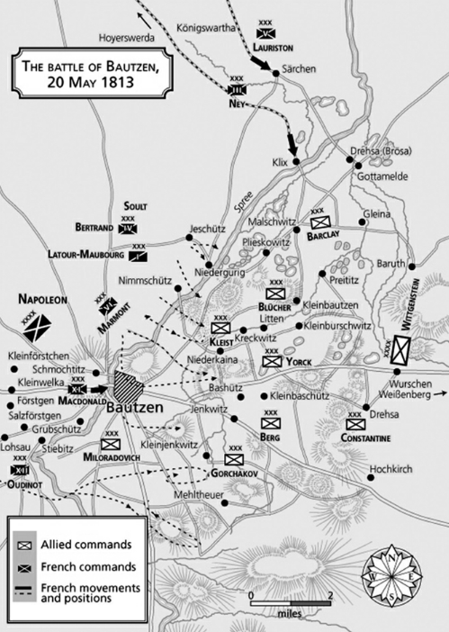
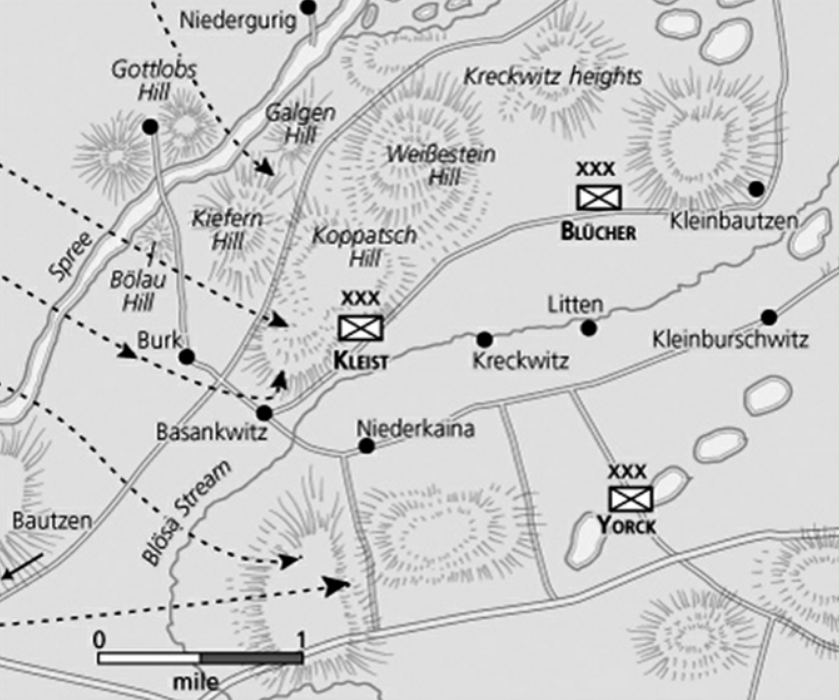

바우첸 전투 (1) - 마침내 시작된 전투
게시: 2023-04-10T06:30:40+09:00
당시 대부분의 전투는 새벽 일찍 동이 트기 직전부터 시작하는 것이 보통이었습니다. 그러나 정작 5월 20일 아침 해가 꽤 높이 올라와 사방을 비출 때까지도 바우첸 일대는 조용했습니다. 연합군의 전초선을 지키던 보초들은 오늘도 지난 1주일 넘게 그랬던 것처럼 조용한 하루가 시작되는구나 싶었습니다. 그러나 9시가 좀 넘어서, 바우첸 시내의 교회탑에서 프랑스군 진영을 감시하고 있던 프로이센군은 프랑스군 일부가 북동쪽을 향해 행군을 시작하는 것을 목격했습니다.

(바우첸을 소개할 때 자주 사용되는 사진의 구도가 딱 이런 구도입니다. 바우첸은 탑의 도시라고 불릴 만큼 교회 첨탑이 많습니다. 저기 보이는 강이 슈프레(Spree) 강입니다.)
이에 대해서는 어떻게 대응해야 할 지에 대해 바트겐슈타인이 미리 작전계획을 짜놓은 것이 있었습니다. 아주 단순한 대응으로서, 프랑스군이 연합군 우익을 돌아가려 북쪽으로 움직이면, 우익에 위치한 연합군 부대도 그만큼 전선을 더 늘인다는 것이었습니다. 연합군 우익은 프로이센군이 담당하고 있었으나, 우익 맨 끝부분은 바로 전날 로리스통의 군단과 충돌한 뒤 후퇴해온 바클레이가 맡고 있었습니다. 그러나 다들 우려했듯이, 바클레이가 병력을 이끌고 이동을 해보니 전선이 너무 넓어지는데 그 일대에 산재한 작은 마을들이 너무 많아 도저히 효과적인 방어선 구축이 어려웠습니다. 결국 바클레이는 클릭스(Klix)에서 브뢰사(Brösa)로 이어지는 전선은 유지할 수 없다고 보고하고 대신 그 남쪽으로 더 짧은 전선인 말슈비츠(Malschwitz)에서 글레이나(Gleina)로 이어지는 전선을 형성했습니다.

(말슈비츠에서 글레이나로 이어지는 구간은 약 3.5km 정도입니다. 바클레이 밑에 아직 2만 정도의 병력이 있었다는 것을 감안하면, 당시 방어선 길이 대비 적정 병력이 어느 정도인지 대충 짐작해보실 수 있을 것입니다.) 그 외에는 별다른 소동 없이 하루가 지나가나 싶었으나, 정오 무렵에 갑자기 프랑스군의 일제 공격이 시작되었습니다. 처음에는 매일 벌어지던 국지전 정도로 생각했으나 곧 이것이 나폴레옹이 준비한 회심의 전면 공세라는 것이 분명해졌습니다. 맹렬한 포격과 함께 막도날의 제11 군단과 마르몽의 제6 군단이 밀로라도비치가 담당한 연합군의 중앙부를 들이쳤고, 이와 동시에 프랑스군의 우익을 맡고 있던 우디노의 제12 군단도 행동을 개시했습니다. 그리고 약 1~2시간 뒤에는 술트의 지휘 하에 베르트랑의 제4 군단과 라투르-모부르(Latour-Maubourg)의 제1 기병군단이 연합군의 우익을 공격했습니다. 노련한 프랑스군은 미리 준비해둔 조립식 다리를 순식간에 슈프레 강 위에 놓고 순조롭게 강을 건너 바우첸 시내를 공격했습니다.

(여기서 갑자기 술트가 튀어나온 것을 의외라고 생각하실 수 있습니다. 기억들 하시겠지만 술트는 러시아 원정에도 참여하지 않았고, 1812년 말까지 스페인에서 웰링턴과 불리한 싸움을 벌이고 있었습니다. 결국 신통한 결과를 내지 못하자 그 이전부터 사이가 좋지 못했던 스페인 국왕이자 나폴레옹의 친형인 조제프의 요청으로 그는 스페인에서 소환되었습니다. 사실 술트는 이미 한참 전부터 전성기 때의 모습을 보이지 못했는데, 바우첸 전투 이후 다시 프랑스 본국으로 소환되어 남부 프랑스를 웰링턴의 침공으로부터 지키는 임무를 맡았습니다. 그림은 1809년 제1차 포르투 전투에서의 술트의 모습입니다. 그림 오른쪽 아래쪽에 고아가 된 포르투갈 아기를 구조하는 프랑스군의 모습이 그려져 있습니다. 이 전투에서 두오루(Douro) 강을 가로지르는 부교가 끊어지는 바람에 프랑스군을 피해 도망치던 많은 포르투갈 민간인이 사망했는데, 실은 그 다리가 끊어진 이유는 너무 많은 민간인들이 부실한 다리를 한꺼번에 건넌데다 강 남쪽의 포르투갈군이 겁을 먹고 부정확한 포격을 날린 것 중 일부가 다리에 명중했기 때문이었다고 합니다.) 일단 중앙부터 보시겠습니다. 나폴레옹이든 비트겐슈타인이든 전선 중앙부가 결정적인 전장이 되리라고 생각하지 않았던 것에는 이유가 있었습니다. 지금도 그렇지만 당시 야전군끼리의 싸움에서는 벽과 가옥이 있는 작은 마을 하나도 꽤 중요한 방어거점 역할을 했으니, 바우첸 같은 도시는 당연히 절대 무시할 수 없는 전술적 목표물이었습니다. 게다가 바우첸은 전체 전선의 중앙부에 있는 도시였으니 더욱 중요한 곳이었습니다. 비록 바우첸 자체는 중세식 낡은 성벽을 가진 도시라서 포병대를 동원한 싸움에는 적절치 않았지만, 바우첸 시외 동쪽에는 매우 든든한 제2차 방어진이 준비되어 있었고, 러시아군의 주력도 거기에 집중 배치되었습니다. 그런 상황에서는 양측 모두 유혈이 낭자한 소모전을 펼칠 수 밖에 없었고 당연히 그런 곳에서 극적인 돌파를 기대하기는 어려웠습니다. 공격하는 막도날의 프랑스군은 수적 우세를 앞세워 압도적인 공격을 퍼부었지만 연합군의 제1 방어선을 맡고 있던 밀로라도비치의 러시아군 전위대도 잘 싸웠습니다. 이들은 프랑스군의 제1차 공격을 물리치는데 성공했고, 재차 밀려오는 제2파 공격도 알렉산드르가 미리 배치해둔 러시아 황실 근위대 6개 대대의 도움을 받아 막아냈습니다. 그러나 숫자에는 장사가 없었습니다. 마르몽의 제6 군단이 바우첸 북쪽에서 슈프레 강을 건너 바우첸 시내로 쏟아져 들어오자 밀로라도비치도 더 버티지 못했습니다. 오후 4시 경이 되자, 밀로라도비치는 참호와 보루로 강화해두었던 1차 방어선을 버리고 바우첸 시내에서 후퇴해야 했습니다. 오후 6시 경에는 바우첸 시내는 프랑스군이 완전히 장악했습니다. 당연히 러시아군도 제2차 방어선을 준비해두고 있었으므로 이 방면에서 연합군이 무너진 것은 아니었습니다만, 이건 비트겐슈타인이 계획했던 작전의 일부는 아니었습니다. 그러나 밀로라도비치도 그렇게 몇 시간만에 후퇴할 수 밖에 없었던 이유가 있었습니다. 프랑스군 우익 때문이었습니다. 연합군의 좌익 쪽에 배치되었던 우디노의 제12 군단은 연합군의 예상대로 연합군의 좌익 끝부분을 매우 적극적으로 파고 들었습니다. 연합군의 제1선은 좌익 끝부분부터 중앙까지를 밀로라도비치의 러시아군 전위대가 길게 늘어져 담당하고 있었으므로 막도날이 바우첸을, 우디노가 바우첸 남쪽을 집중 공격하자 밀로라도비치로서는 전면과 좌측 측면을 협공 당하는 셈이라 까딱하면 우디노에게 퇴로를 끊길 판국이었습니다. 덕분에 밀로라도비치는 바우첸을 예상한 것보다 더 빨리 상실했던 것입니다.
어떻게 보면 밀로라도비치가 어처구니 없이 패퇴한 것처럼 보입니다만, 애초에 밀로라도비치의 병력만으로, 그것도 그렇게 좌익에서 중앙까지 긴 전선을 지키게 한 것은 애초에 비트겐슈타인이 의도한 바가 있기 때문이었습니다. 위에서도 언급했듯이, 슈프레 강에 바싹 붙어 있어 고지라고 할 만한 곳이 없는데다 성벽이 대포에 취약한 바우첸은 방어전을 펼칠 장소로 적합한 곳은 아니었습니다. 처음에 바우첸에서 후퇴를 멈추고 싸우기로 한 것도, 바우첸 시내가 아니라 바우첸 동쪽의 고지대가 방어전에 유리해 보였기 때문이었습니다.
그렇다면 밀로라도비치의 전위대를 그렇게 슈프레 강변에 주르르 늘어세웠던 것은 무의미한 것이었을까요? 그것도 의도한 바가 있었습니다. 비트겐슈타인의 기본 전략은 방어전이었는데, 서쪽에서 접근하는 나폴레옹을 막겠다고 남북으로 길게 늘어진 방어선을 구축할 때 가장 어려운 점은 나폴레옹의 주공 방향이 어딘지를 파악하는 것이었습니다. 밀로라도비치의 제1 방어선은 바로 그것을 파악하기 위한 미끼 정도에 불과했습니다.
그러나 애초에 계획이 되어 있건 말건 적의 공격에 밀려 후퇴를 하는 것은 결코 영광스러운 일은 아니었습니다. 특히 이렇게 바우첸을 쉽게(?) 상실한 것 때문에 나중에 프로이센군 지휘부와 러시아군 지휘부는 당일 밤 대판 언쟁을 벌이게 됩니다. 그러나 그 전에 먼저 문제의 핵심인 연합군 우익 상황을 보셔야 합니다.

(5월 20일 낮 무렵의 상황입니다.) 프로이센군 위주로 구성되었던 우익의 최전방은 클라인바우첸(Kleinbautzen), 플리스코비츠(Pließkowitz), 도베르쉬츠(Doberschütz), 니더구리쉬(Niedergurig) 등의 작은 마을들에 분산되어 있었습니다. 역시나 전선은 넓은데 지켜야 할 거점이 되는 마을 개수는 많다보니, 한 마을당 1개 대대를 배치하더라도 모든 마을을 다 점령할 수가 없을 정도였습니다. 이렇게 방어선이 길게 늘어지면 방어군은 대책없이 분산되었으므로 그 중 마음에 드는 곳을 골라서 집중공격할 수 있는 공격군에게 매우 유리했습니다. 그러나 프로이센군의 총사령관인 블뤼허는 믿는 구석이 있었습니다. 그의 주방어선은 슈프레 강의 우안, 그러니까 동쪽 강변을 끼고 솟은 나지막한 일련의 언덕들이었습니다. 바이스슈타인(Weißestein), 갈겐(Galgen), 키페른(Kiefern), 뵐라우(Bölau) 등의 이런 언덕들은 지도상에서 보면 고지라고 부르기가 약간 민망할 정도의 낮은 높이였습니다만, 이 언덕들은 높이보다도 위치가 매우 좋았습니다. 슈프레 강을 건널 수 있는 다리가 니더구리쉬 마을 바로 앞에 놓여 있었고, 이 언덕들은 니더구리쉬 마을과 그 다리를 바로 발 아래 내려다보고 있었기 때문이었습니다.

(프로이센군이 담당한 연합군 우익, 즉 북쪽 방어선의 지형입니다. 슈프레 강에 바싹 붙어 늘어선 저 언덕들의 중요성을 쉽게 보실 수 있습니다.) 바로 그런 위치 때문에, 술트가 이끈 프랑스군 좌익의 주된 공격 방향도 바로 니더구리쉬를 향해야 했습니다. 과연 술트는 프로이센군이 놓은 이 덫을 돌파할 수 있었을까요? Source : The Life of Napoleon Bonaparte, by William Milligan Sloane Napoleon and the Struggle for Germany, by Leggiere, Michael V
https://en.wikipedia.org/wiki/Jean-de-Dieu_Soult
https://seeworldnotseaworld.blog/2023/03/05/bautzen-germany-a-visit-home-%E2%9D%A4%EF%B8%8F/